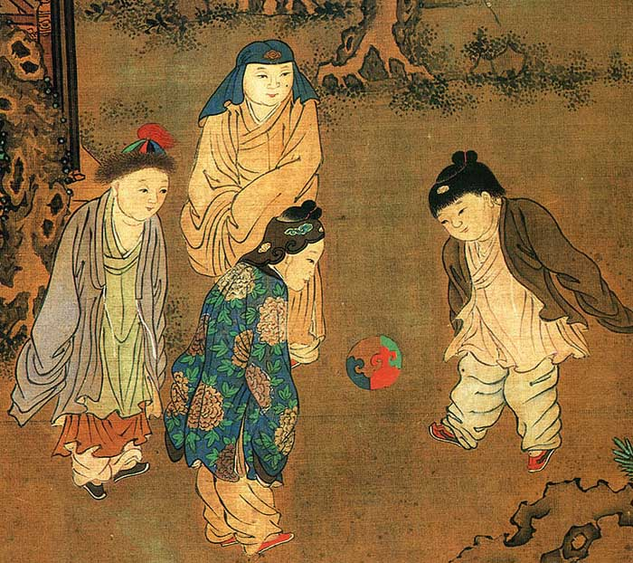
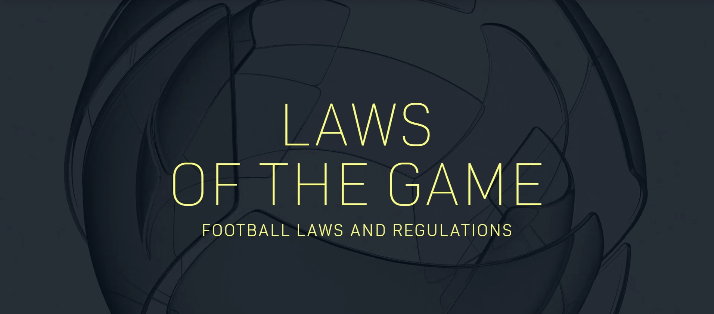
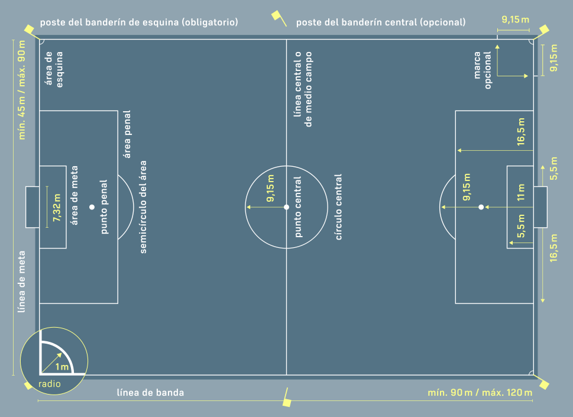
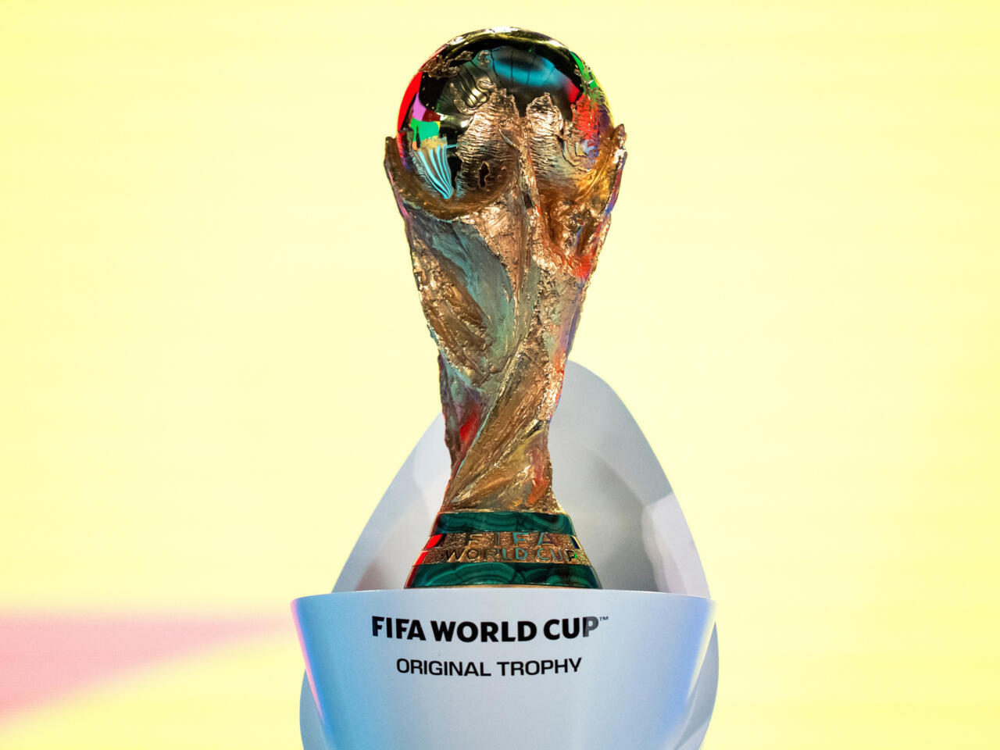
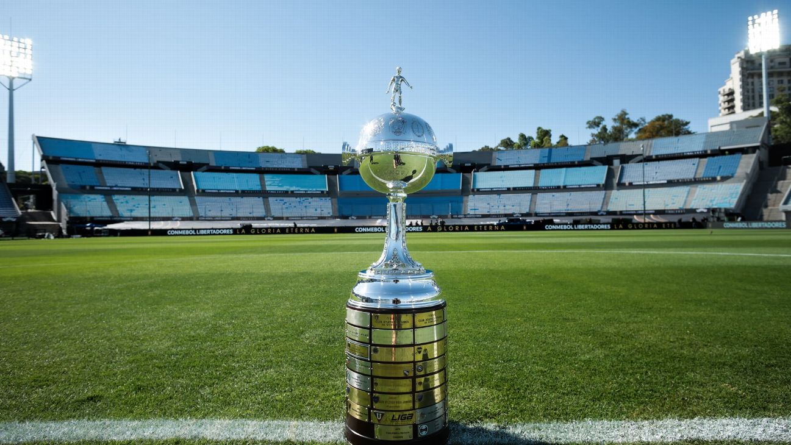
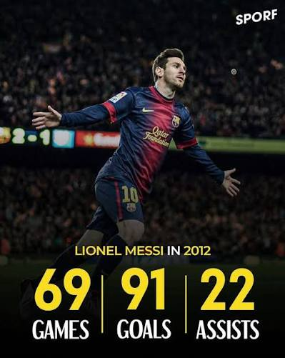
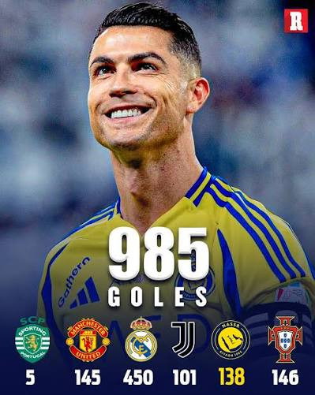
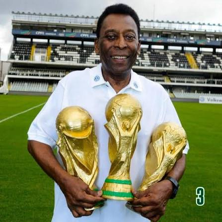

Un análisis estructurado sobre la evolución histórica del fútbol, sus reglas fundamentales, tácticas, terreno de juego y récords míticos.
Explorar ContenidoDesde los antecedentes antiguos (Cuju) hasta la unificación de las reglas modernas en Inglaterra.

Entre los antecedentes más antiguos del deporte se encuentra el *Cuju* practicado en la antigua China. Posteriormente, el fútbol moderno se formalizó en Londres en 1863 al unificar las reglas y separar el juego de manos del rugby.
Leer Reseña Histórica del Cuju (FIFA Museum)
El organismo internacional IFAB regula las 17 reglas oficiales del fútbol, normando aspectos clave como la duración de los partidos (dos tiempos de 45 min), sanciones disciplinarias y estatutos generales.
Consultar Índice de las 17 Reglas (IFAB Oficial)[cite: 1]Video educativo completo sobre los orígenes, antecedentes antiguos y el desarrollo del fútbol moderno reglamentado.
Conceptos fundamentales sobre cómo se conforma un partido de fútbol profesional.
Un partido oficial es disputado por dos equipos de máximo 11 jugadores cada uno en cancha (uno de los cuales actúa como guardameta). El juego no puede iniciar ni continuar si un equipo tiene menos de 7 jugadores.
Cada equipo cuenta con una lista de suplentes y en torneos oficiales se permiten generalmente hasta 5 sustituciones por partido para preservar la integridad física de los futbolistas.
La máxima autoridad es el árbitro principal dentro del campo, asistido por dos árbitros asistentes en las bandas, un cuarto árbitro y el sistema de videoarbitraje (VAR).
Guardameta (único habilitado para usar las manos en su área), centrales y laterales encargados de la contención.
Pivotes y volantes creativos. Distribuyen el balón, marcan el ritmo del juego y conectan las líneas.
Extremos veloces y centrodelanteros de área dedicados a romper las líneas rivales y marcar goles.
Esquemas colectivos organizados para optimizar el rendimiento táctico durante las fases de ataque y defensa.
Especificaciones técnicas y diagrama reglamentario del terreno de juego.

El desarrollo de estrategias colectivas y la distribución táctica en el campo.
La táctica en el fútbol busca dominar los espacios mediante pases rápidos, presión en bloque y movimientos colectivos para superar las líneas del rival.
Con 4 defensas, 3 mediocampistas y 3 delanteros, este sistema busca dominar la posesión, generar superioridad numérica en la medular y amplitud por las bandas.
Los torneos más relevantes a nivel mundial de selecciones y clubes.

La máxima cita del deporte que se disputa cada cuatro años reuniendo a los mejores países del orbe.
El torneo de clubes más competitivo y prestigioso del planeta.

Emblema del fútbol sudamericano, reconocido por su fervor e intensidad táctica incomparable.
Hazañas individuales y registros insuperables en la historia del fútbol profesional.
El 22 de septiembre de 2015, jugando para el Bayern Múnich contra el Wolfsburgo, Lewandowski anotó 5 goles entre el minuto 51 y el 60. Es el repóker más rápido en la historia de las grandes ligas europeas, consiguiendo 4 récords Guinness oficiales en un solo juego.

En 2012, Lionel Messi superó la marca histórica de Gerd Müller (85 goles) al marcar 91 goles oficiales entre el FC Barcelona y la Selección Argentina en solo 69 partidos.

Posee el récord del mayor número de goles anotados en partidos oficiales en la historia del fútbol profesional, superando marcas históricas a nivel de clubes y selección.

Edson Arantes do Nascimento 'Pelé' se mantiene como el único futbolista en la historia capaz de conquistar tres Copas Mundiales de la FIFA (Suecia 1958, Chile 1962 y México 1970).
Opinión sobre el contenido desarrollado y la integración de tecnologías.
"En lo personal, realizar esta página web me ayudó a entender mejor cómo el fútbol combina historia, táctica y preparación física, dejando de ser un simple juego para convertirse en una disciplina muy completa. Además, aplicar los temas de la materia de Aplicación de las Tecnologías de la Información me permitió organizar la información de forma visual y accesible, usando herramientas web modernas para estructurar proyectos académicos de manera profesional."
Fuentes formales que respaldan el contenido e imágenes utilizadas en el sitio.